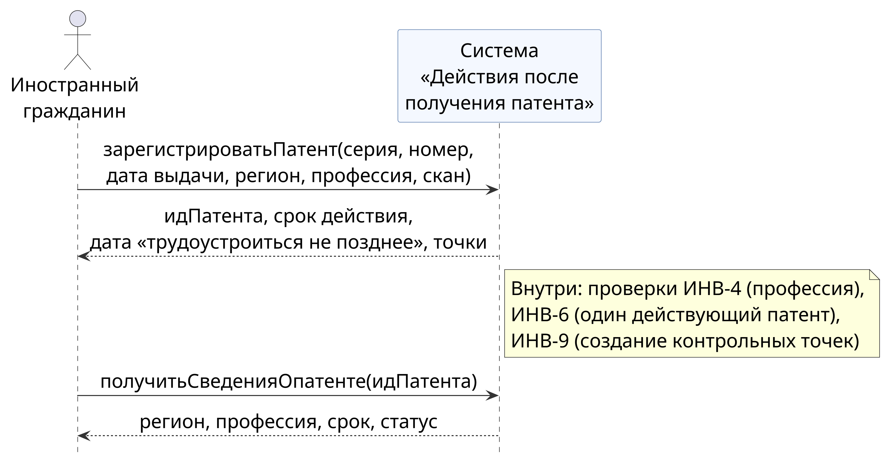
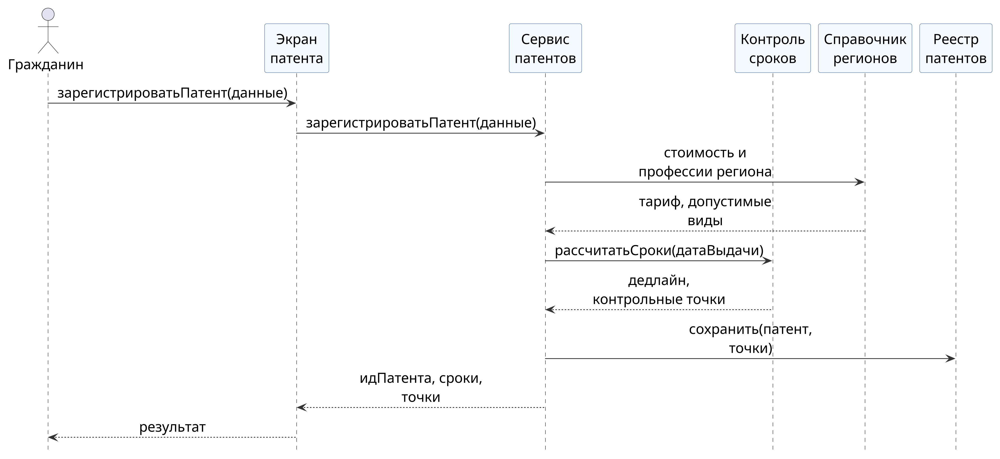
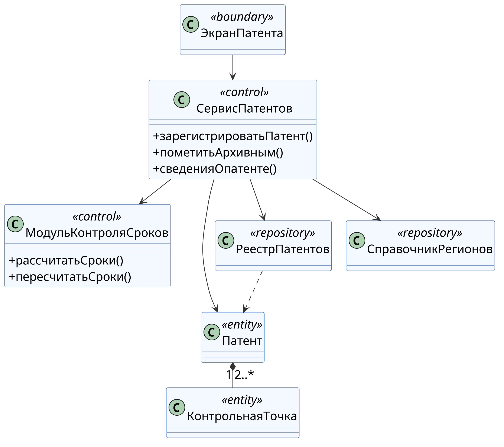

Дорожная карта описывает последовательность действий иностранного гражданина при трудоустройстве
в Российской Федерации: миграционный учёт, дактилоскопия, медицинское освидетельствование, выбор порядка
трудоустройства, подготовка документов, подача заявления и получение патента, действия после получения
патента, участие в программе переселения, получение разрешения на временное проживание и вида на жительство.
Объектом моделирования является седьмой раздел дорожной карты — действия после получения патента.
Раздел содержит две обязанности с общим сроком:
п. 7.1 — заключить трудовой договор или договор гражданско-правового характера в течение
двух месяцев с даты выдачи патента; обязанность адресована иностранному гражданину;
п. 7.2 — направить в территориальный орган МВД уведомление об осуществлении трудовой
деятельности с копией договора через портал государственных услуг или по почте; уведомление
направляется после заключения договора, но не позднее двух месяцев с даты выдачи патента;
обязанность адресована работодателю.
Ключевая особенность темы: обе обязанности отсчитываются от даты выдачи патента, а не от даты въезда,
даты заключения договора или даты внесения сведений в систему. Второй особенностью является смена
основного исполнителя: в п. 7.1 действует иностранный гражданин, в п. 7.2 — работодатель.
1.2. Границы подсистемы
В подсистему входят: учёт выданного патента и его реквизитов, расчёт срока трудоустройства, контрольные
точки и напоминания, регистрация трудового договора или договора ГПХ с проверкой соответствия патенту,
подготовка и отправка уведомления в МВД, хранение доказательств отправки, учёт авансовых платежей НДФЛ,
прекращение договора, формирование реестра и отчётности.
За границами подсистемы остаются: выдача и аннулирование патента, медицинское освидетельствование,
экзамен по русскому языку, миграционный учёт, программа переселения, оформление разрешения на временное
проживание и вида на жительство. Результаты этих процессов являются предусловиями и в модель не входят.
Входные данные: выданный патент (серия, номер, дата выдачи, срок действия, регион, профессия).
Выходные данные: заключённый договор, направленное уведомление с копией договора, сохранённые
доказательства отправки, актуальный статус патента.
1.3. Состав работ
Таблица 1 — Состав лабораторных работ и полученные результаты
№
Содержание работы
Результат
1
Определение функциональных требований
7 прецедентов, 8 акторов, спецификации
2
Модель предметной области
18 классов, 9 инвариантов, предметные типы
3
Системные диаграммы последовательностей и спецификация операций
16 операций, 19 диаграмм
4
Диаграммы взаимодействия объектов
16 диаграмм, 144 объекта, 196 сообщений
5
Диаграммы классов проектирования
46 классов, трассировка «операция — класс — метод»
альтернативный канал отправки заказным письмом с описью
A6
ФНС
вспомогательный
администрирование НДФЛ, подтверждение платежа
A7
Банк
вспомогательный
приём авансового платежа, формирование документа об оплате
A8
Администратор системы
основной в П07
справочники, реестр и отчётность, права доступа
МВД отнесено к вспомогательным акторам, поскольку подсистема не принимает решений по патенту:
она формирует, отправляет и сохраняет доказательства уведомления, тогда как приём уведомления и
аннулирование патента выполняются ведомством. Работодатель и заказчик по договору ГПХ объединены
в одного актора: различие фиксируется видом договора, а не отдельным сценарием.
2.2. Прецеденты
Таблица 3 — Перечень прецедентов
ID
Прецедент
Основной исполнитель
Уровень
П01
Учёт выданного патента и постановка сроков под контроль
иностранный гражданин
задача пользователя
П02
Трудоустройство: трудовой договор или договор ГПХ
иностранный гражданин
задача пользователя
П03
Уведомление МВД об осуществлении трудовой деятельности
работодатель
задача пользователя
П04
Контроль срока трудоустройства и напоминания
иностранный гражданин
вспомогательная
П05
Учёт авансовых платежей НДФЛ и контроль срока действия патента
патент учтён и действует; с даты выдачи прошло менее двух месяцев; профили сторон заполнены
Постусловия
договор зарегистрирован; профессия проверена по патенту; создана контрольная точка «направить уведомление»
3. Модель предметной области
3.1. Состав модели
Модель включает 13 корневых классов и 5 подклассов, всего 18. Абстрактными являются два класса:
«Договор» (подклассы «Трудовой договор» и «Договор ГПХ») и «Пользователь» (подклассы «Пользователь ИГ»,
«Представитель работодателя», «Администратор системы»). Остальные классы конкретны, что обеспечивает
читаемость диаграммы.
Связи ядра: у гражданина может быть несколько патентов, но действующий — не более одного; на патент
приходится не более одного действующего договора; по договору формируется ровно одно уведомление.
Контрольные точки связаны с патентом композицией: без патента они не существуют.
3.3. Инварианты
Таблица 5 — Инварианты предметной области
ID
Формулировка
ИНВ-1
на патент — не более одного действующего договора
ИНВ-2
уведомление направляется не раньше даты договора и не позднее двух месяцев с даты выдачи патента
ИНВ-3
договор заключается не позднее двух месяцев с даты выдачи патента
ИНВ-4
профессия по договору входит в перечень профессий, указанных в патенте
ИНВ-5
патент действителен при непрерывной уплате авансовых платежей НДФЛ
ИНВ-6
не более одного действующего патента; срок действия — до 12 месяцев
ИНВ-7
сумма платежа равна стоимости патента в регионе на дату платежа
ИНВ-8
уведомление и доказательства отправки хранятся бессрочно
ИНВ-9
контрольные точки и напоминания не существуют без патента
3.4. Сроки и напоминания
Единственной точкой отсчёта является дата выдачи патента. От неё система рассчитывает предельную дату
трудоустройства и формирует не менее двух контрольных точек: заключение договора (п. 7.1) и направление
уведомления (п. 7.2). Каждая точка имеет плановую дату, фактическую дату и статус; к каждой точке
привязана серия напоминаний — за 30, 14, 7, 3 и 1 день до плановой даты.
Рисунок 3 — Сроки, контрольные точки и напоминания
Два месяца исчисляются календарными месяцами с приведением к последнему дню месяца: 31 января плюс один
месяц — 28 или 29 февраля. Правило реализовано в одном классе — «Модуль контроля сроков». Позднее внесение
патента в систему срок не изменяет: предельная дата остаётся равной дате выдачи плюс два месяца,
а система отображает остаток срока.
4. Системные операции и диаграммы последовательностей
Внешнее поведение подсистемы описано 16 системными операциями. Для каждой операции определены
параметры, результат, предусловия и постусловия. Построено 19 диаграмм последовательностей: 7 основных
сценариев и 12 альтернативных. На диаграммах этого уровня система представлена как «чёрный ящик»:
показаны только вызовы операций и возвращаемые результаты.
Таблица 6 — Системные операции и проверяемые инварианты
№
Операция
Класс
Инварианты
1
зарегистрироватьПатент
СервисПатентов
ИНВ-4, 6, 9
2
пометитьПатентАрхивным
СервисПатентов
ИНВ-6, 9
3
получитьСведенияОпатенте
СервисПатентов
ИНВ-4, 6
4
заключитьДоговор
СервисДоговоров
ИНВ-1, 3, 4
5
отменитьДоговор
СервисДоговоров
ИНВ-1
6
направитьУведомлениеМВД
СервисУведомлений
ИНВ-2, 8
7
зафиксироватьВозвратУведомления
СервисУведомлений
ИНВ-2, 8
8
настроитьНапоминания
СервисНапоминаний
ИНВ-9
9
пересчитатьСрокиПатента
МодульКонтроляСроков
ИНВ-2, 3, 9
10
зафиксироватьНарушениеСрока
МодульКонтроляСроков
ИНВ-2, 3
11
зарегистрироватьПлатёжНДФЛ
СервисНДФЛ
ИНВ-5, 7
12
подтвердитьПлатёж
СервисНДФЛ
ИНВ-5, 7
13
зафиксироватьПрекращениеПатентаНеуплата
СервисНДФЛ
ИНВ-5, 9
14
прекратитьДоговор
СервисДоговоров
ИНВ-1, 8
15
сформироватьРеестр
МодульОтчётности
ИНВ-2, 3
16
выгрузитьРеестр
МодульОтчётности
ИНВ-8
4.1. Основные сценарии

Рисунок 4 — Регистрация патента: проверка инвариантов, расчёт срока,
создание контрольных точекРисунок 5 — Заключение договора (п. 7.1): проверки ИНВ-1, ИНВ-3, ИНВ-4Рисунок 6 — Направление уведомления в МВД (п. 7.2): проверка срока,
сохранение квитанции и копии договораРисунок 7 — Регистрация и подтверждение платежа НДФЛ: проверки ИНВ-5, ИНВ-7
4.2. Альтернативные сценарии
Для каждого прецедента ядра (П01–П04) описано не менее двух альтернативных сценариев: учтённый ранее
действующий патент; ошибки в реквизитах; позднее внесение патента; отказ работодателя; истечение срока
трудоустройства; недоступность ЕПГУ и отправка по почте; возврат почтового отправления; просрочка
и эскалация напоминаний; платёж не найден или сумма меньше требуемой; неуплата и прекращение патента;
смена работодателя; выгрузка реестра за период. Всего 12 альтернативных сценариев.
Таблица 7 — Спецификация операции 6 (направитьУведомлениеМВД)
Параметры
идентификатор договора; канал отправки (ЕПГУ или почта); подтверждение — электронная подпись и дата либо дата, трек-номер и опись
Результат
проект формы с остатком срока; после отправки — уведомление с каналом, квитанцией или трек-номером, датой и статусом
Предусловия
договор заключён; патент учтён и действует; дата отправки не ранее даты договора и не позднее даты выдачи патента плюс два месяца (ИНВ-2)
Постусловия
статус «направлено»; квитанция и копия договора сохранены бессрочно (ИНВ-8); контрольная точка закрыта; договор переведён в состояние «уведомление направлено»
5. Диаграммы взаимодействия объектов
Внутреннее поведение описано для каждой системной операции: построено 16 диаграмм взаимодействия,
включающих 144 объекта и 196 сообщений. Использованы компоненты нескольких видов: экран, сервис,
модуль, реестр, хранилище документов, справочник, шлюз внешней системы, журнал аудита, планировщик.
Рисунок 8 — Операция 6 «направитьУведомлениеМВД»: последовательность обмена сообщениями
между объектами

Рисунок 9 — Операция 1 «зарегистрироватьПатент»: формирование агрегата
«патент и контрольные точки»
Таблица 8 — Наиболее содержательные диаграммы взаимодействия
Операция
Объектов
Сообщений
Основные участники
1. зарегистрироватьПатент
11
14
сервис патентов, модуль контроля сроков, справочник регионов, реестр патентов
6. направитьУведомлениеМВД
12
20
сервис уведомлений, модуль прав доступа, шлюз ЕПГУ, хранилище документов
Диаграммы этого уровня показывают распределение ответственности: решение о возможности выполнения
операции принимает управляющий объект, обращение к внешним системам выполняется только через шлюзы,
а сведения о выполненной операции фиксируются в журнале аудита.
6. Классы проектирования
Модель проектирования построена по схеме BCE (boundary — control — entity) и содержит 46 классов:
7 граничных, 10 управляющих, 19 сущностей, 7 хранилищ и 3 шлюза. Зависимости направлены сверху вниз:
граничный слой обращается к управляющему, управляющий — к сущностям, хранилищам и шлюзам; сущности
не зависят от внешних слоёв.
сервис патентов · сервис договоров · сервис уведомлений · сервис НДФЛ ·
модуль контроля сроков · сервис напоминаний · модуль отчётности · модуль прав доступа ·
планировщик задач · журнал аудита
↓
Сущности — 19 классов
18 классов модели предметной области и «Отчёт-реестр», получивший собственный
жизненный цикл
↓
Хранилища (7) и шлюзы (3)
реестры патентов, договоров, уведомлений, платежей · хранилище документов ·
справочники регионов и видов деятельности · шлюзы ЕПГУ, Почты, ФНС

Рисунок 10 — Фрагмент диаграммы классов: операция 1 и направление зависимостей
Модель не привязана к языку реализации: используются предметные типы (дата, сумма, идентификатор,
трек-номер), отсутствуют технические понятия — HTTP, SQL, ORM, форматы сериализации.
Таблица 9 — Трассировка «системная операция — класс — метод»
№
Операция
Метод
1
зарегистрироватьПатент
СервисПатентов.зарегистрироватьПатент()
2
пометитьПатентАрхивным
СервисПатентов.пометитьАрхивным()
4
заключитьДоговор
СервисДоговоров.заключить()
6
направитьУведомлениеМВД
СервисУведомлений.направить()
9
пересчитатьСрокиПатента
МодульКонтроляСроков.пересчитатьСроки()
11
зарегистрироватьПлатёжНДФЛ
СервисНДФЛ.зарегистрироватьПлатёж()
15
сформироватьРеестр
МодульОтчётности.сформировать()
16
выгрузитьРеестр
МодульОтчётности.выгрузить()
7. Реализация
Программное обеспечение реализовано на языке Python с использованием фреймворка FastAPI. Структура
приложения повторяет слои модели проектирования: граничному слою соответствуют роутеры и схемы запросов,
управляющему — сервисы и модуль инвариантов, слою сущностей — классы предметной области. Хранилища
реализованы в памяти за интерфейсами репозиториев, взаимодействие с внешними системами — через шлюзы.
lab6-implementation/
├── app/boundary/ роутеры и схемы запросов
├── app/control/ сервисы, invariants.py, планировщик
├── app/entity/ сущности модели предметной области
├── app/repository/ реализации хранилищ
├── app/gateway/ ЕПГУ, Почта, ФНС
└── tests/ 84 теста
Таблица 10 — Соответствие слоёв модели проектирования и модулей реализации
Слой
Модуль
Граничный (7 классов)
app/boundary/
Управляющий (10 классов)
app/control/
Сущности (19 классов)
app/entity/
Хранилища (7)
app/repository/
Шлюзы (3)
app/gateway/
Реализованы все 16 системных операций; общее количество маршрутов — 28, из них 12 служебных.
Проверки инвариантов выполняются в сервисах, а не в роутерах: сервис можно вызвать напрямую, минуя
граничный слой, поэтому инвариант размещён рядом с моделью — в модуле invariants.py.
Тестовый набор включает 84 теста, в том числе отдельный тест на каждый из девяти инвариантов;
время в тестах передаётся через подменяемые часы, что исключает зависимость от текущей даты.
Ограничения реализации: хранилища находятся в оперативной памяти и не сохраняют состояние между
запусками; шлюзы внешних систем являются заглушками с детерминированными ответами; аутентификация
учебная; файлы хранятся в виде метаданных и хеша. Указанные ограничения не влияют на проверку
инвариантов и на соответствие модели проектирования.
8. Пример сквозной трассировки
Трассировка операции 4 «заключить договор» показывает, что каждый артефакт связан с предыдущим
и последующим уровнем модели.
Таблица 11 — Трассировка операции 4 по уровням модели
Уровень
Содержание
Прецедент
П02 «Трудоустройство», основной исполнитель — иностранный гражданин (п. 7.1)
параметры — патент, работодатель, вид договора, дата, профессия, файл; результат — идентификатор и статус; постусловие — контрольная точка «направить уведомление»
Диаграмма последовательности
вызов операции актором и возврат результата; внутренние проверки — в примечании (рисунок 5)
POST /contracts → метод сервиса → тест test_contracts.py
Аналогичная трассировка выполнена для операции 1: прецедент П01 → операция «зарегистрироватьПатент»
→ рисунки 4 и 9 → класс СервисПатентов → POST /patents → test_patents.py.
9. Принятые проектные решения
Количество операций. В модели 16 системных операций: отдельная операция введена для каждого
изменения состояния, предусмотренного сценариями. Альтернативные ветви потребовали собственных операций —
архивирование патента, отмена черновика договора, фиксация возврата почтового отправления, подтверждение
платежа, прекращение патента из-за неуплаты; без них эти ветви изменяли бы состояние системы вне
спецификации.
Соотношение диаграмм и операций. Диаграмм последовательностей 19, операций 16. Диаграмма
описывает сценарий, то есть путь достижения результата; операция — действие, которое может встречаться
в нескольких сценариях.
Состав классов предметной области. В модель включены только понятия, обладающие собственным
поведением или жизненным циклом. Должность является атрибутом договора, а вид деятельности вынесен
в справочник, поскольку на него проверяется инвариант ИНВ-4.
Обработка просрочки договора. Заключение договора после установленного срока не блокируется:
система отражает фактические отношения, фиксируя просрочку и создавая событие для отдельной операции
«зафиксировать нарушение срока».
Обработка просроченного уведомления. Отправка уведомления после срока требует явного
подтверждения; без него операция завершается отказом, с ним — уведомление получает статус «просрочено».
Размещение проверок. Инварианты проверяются в управляющем слое, а не в граничном: граничный
слой может быть обойдён при обращении к сервису напрямую, что используется в тестах.
Хранение доказательств. Требование бессрочного хранения реализовано структурно: в репозиториях
отсутствует операция удаления уведомлений и документов.
Хранилища. В модели проектирования выделено 7 хранилищ — по одному на каждый реестр и справочник.
Единое хранилище для всех сущностей было бы избыточно связанным объектом и потребовало бы разделения
при переходе к базе данных.
Заключение
В работе построена модель подсистемы «Действия после получения патента»: определены акторы
и прецеденты, описана модель предметной области с девятью инвариантами, определены 16 системных
операций и построены диаграммы последовательностей, для каждой операции построена диаграмма
взаимодействия объектов, разработаны классы проектирования и выполнена реализация, соответствующая
модели.
Сквозным элементом всех этапов являются инварианты предметной области: они определяют предусловия
операций, проверки в сервисах и состав тестов. Трассировка «прецедент — операция — класс — метод —
маршрут — тест» выполнена для всех операций, что подтверждает согласованность артефактов.
Дальнейшее развитие работы связано с переходом к реляционной базе данных с закреплением инвариантов
ограничениями и индексами, подключением реальных информационных систем и реализацией фонового
планировщика контроля сроков.